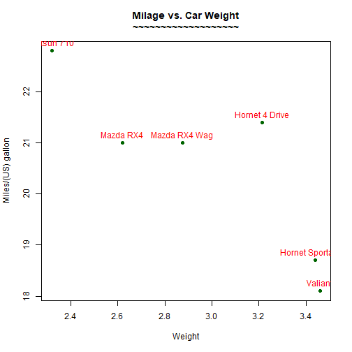
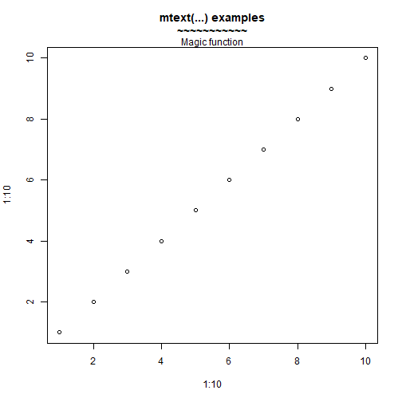
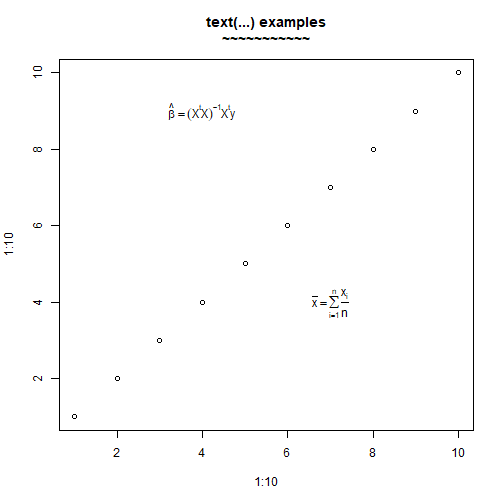
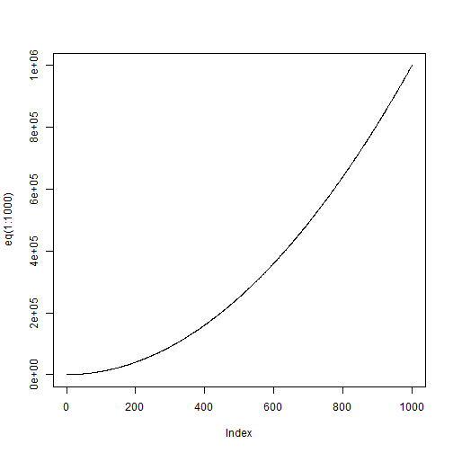
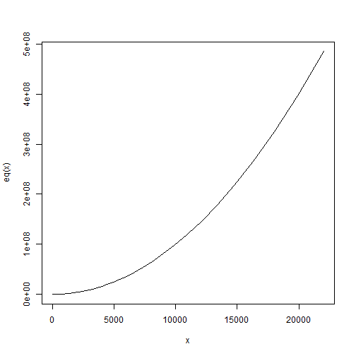
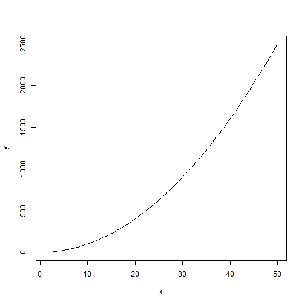
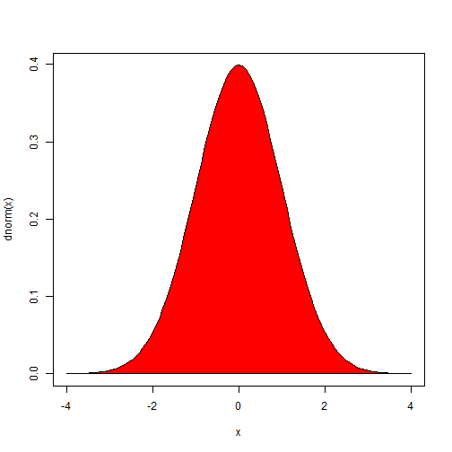
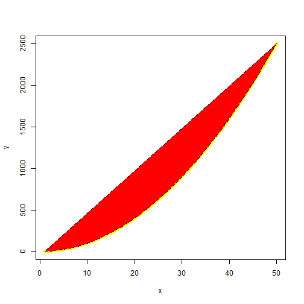
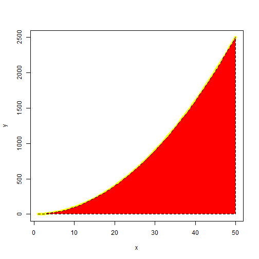
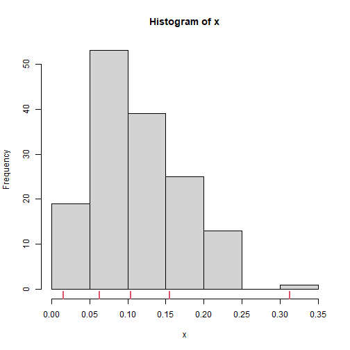

Plot more
更多繪圖
繪圖區中的字串
函數 text() 在繪圖區填入字串,簡化的指令如下:
text(x, y, labels)
x and y: 文字座標;
labels: 例如 “a label”
pos: 下左上右，1234
cex: 放大倍數，例如，0.65。
範例 :
d<-head(mtcars)
plot(d[,'wt'], d[,'mpg'],
main="Milage vs. Car Weight\n~~~~~~~~~~~~~~~~~~~",
xlab="Weight", ylab="Miles/(US) gallon",
pch=19, col="darkgreen")
text(d[,'wt'], d[,'mpg'], row.names(d), cex=1,pos=3,col="red") 
在圖形margin中填入文字
mtext(text, side=3)
text : 例如”a label”
side : 哪一側 :
順時針
1: 下
2: 左
3: 上
4: 又
範例 :
plot(1:10, 1:10,
main="mtext(...) examples\n~~~~~~~~~~~")
mtext("Magic function", side=3)
Add mathematical annotation to a plot
plot(1:10, 1:10,
main="text(...) examples\n~~~~~~~~~~~")
text(4, 9, expression(hat(beta) == (X^t * X)^{-1} * X^t * y))
text(7, 4, expression(bar(x) == sum(frac(x[i], n), i==1, n)))
函數畫圖
eq = function(x){x*x}
plot(eq(1:1000), type='l')
問題是如果x座標的增加不是1單位?
x<-seq(1,10,0.1)
y<-exp(x)
x<-y
eq = function(x){x*x}
plot(x,eq(x), type='l')
plot()的參數可以是y 或兩個參數(x,y),但是函數curv()的第一個參數是expr,不是y。
㊙️ 如果不指定from,to,或者add=T,內定是從0到1。
eq = function(x){x*x}
curve(eq, from=1, to=50, xlab="x", ylab="y")
❓1 解釋下面兩個程式區塊為何錯誤?如何修正?
eq = function(x){x*x} y<-eq(1:50) curve(y, xlab="x", ylab="y") #> Error in y(x): 沒有這個函數 "y"❓2下面的錯誤?
eq = function(x){x*x} z<-1:50 curve(eq(z), xlab="x", ylab="y")
Error in curve(eq(z), xlab = "x", ylab = "y") : 'expr' must be a function, or a call or an expression containing 'x'
💯上面的eq() (㊙️ 這個參數會被轉成expression 而這個表達式需要symbol x),而函數中的變數如果是z就找不到然後發生錯誤。
solution:
curve(eq(z),xname="z", xlab="x", ylab="y")plot example
正常
polyred = curve(dnorm(x), xlim = c(-4,4))
polygon(polyred$x, polyred$y, col = "red")
❓ 解釋下面兩個,第一個是錯的
❌ 這不是我們要的圖
eq = function(x){x*x}
y<-eq(1:50)
curve(eq, 1,50,xlab="x", ylab="y",lwd=5,col="yellow")
polygon(1:50,y,lty=2,col="red")
⭕
eq = function(x){x*x}
y<-eq(1:50)
curve(eq, 1,50,xlab="x", ylab="y",lwd=5,col="yellow")
polygon(c(1:50,50),c(y,0),lty=2,col="red")
💯 第一個點和最後一個點會連在一起。然後填色。
rug
set.seed(3)
x <- rbeta(150, 3, 25)
#png("rug.png")
hist(x)
rug(quantile(x), col=2, lwd=2.5)
練習
par(mfrow=c(2,2))
plot(dnorm(x),xlim=c(-4,4))
plot(pnorm(x),xlim=c(-4,4))
plot(qnorm(x),xlim=c(-4,4))
plot(rnorm(x),xlim=c(-4,4))